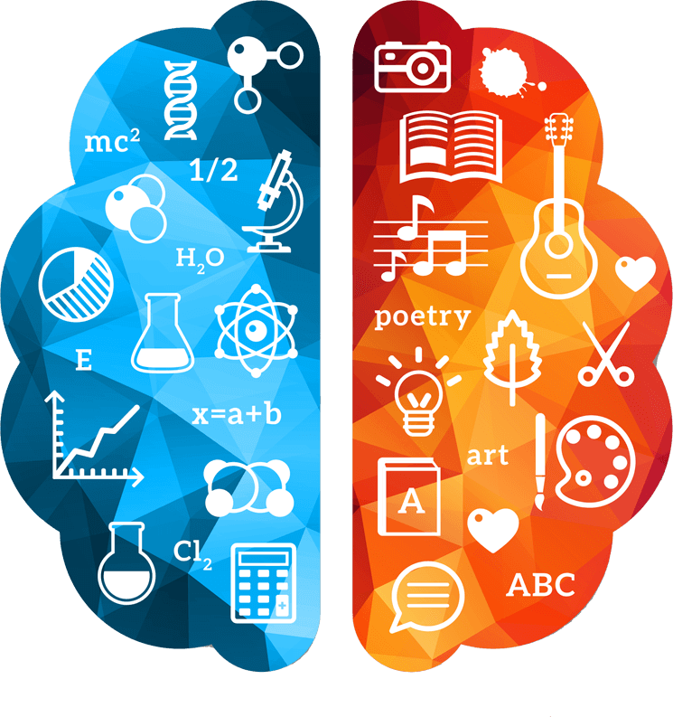

mindset.ro
O scurta introducere a creierului si a neurostiintei pe placul tuturor, explicata intr-un mod placut si care te va face sa cunosti mai multe despre tine.

Creierul stâng
Emisfera creierului stang este asociata cu a fi dreapta, sensibila, verbala, analitica, realista, rationala, directa si fortata.
Creierul drept
Emisfera dreapta a creierului este orientata spatial si este asociata cu a fi emotionala, empatica, plina de umor, flexibila, jucausa si complexa.